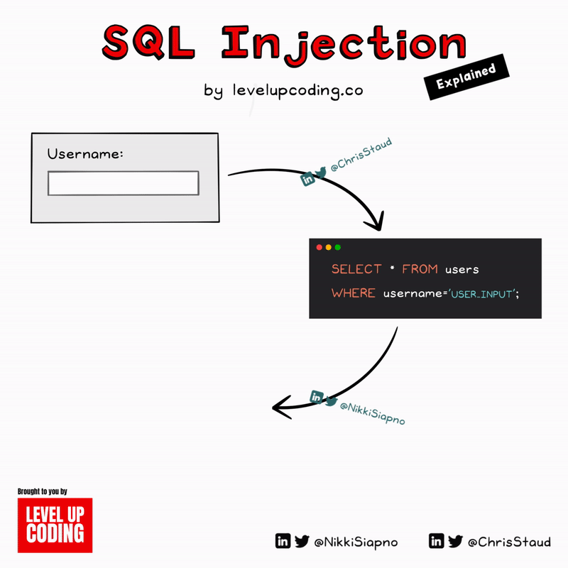

SQL Injection
Learn about SQL Injection attacks and how hackers exploit vulnerabilities to steal sensitive data.
Top Types of SQL Injection:
-

Error-based SQL Injection
Hackers trigger database errors to identify vulnerable parameters and extract data.
-
Blind SQL Injection
Hackers make multiple queries to databases to extract data piece by piece without errors.
-
Time-based SQL Injection
Time-based techniques are often used to achieve tests when the hacker has no other way to retrieve information from the database server. This kind of attack injects a SQL segment which contains a specific DBMS function or heavy query that generates a time delay. Depending on the time it takes to get the server response, it is possible to deduct some information. As you can guess, this type of inference approach is particularly useful for blind and deep-blind SQL injection attacks. Timing differences in responses help hackers infer data by altering database query execution times.
Prevention Methods:
-

Input Validation
Validate all input data on server-side to remove harmful characters before queries.
-
Prepared Statements
Use prepared parameterized queries instead of concatenating variables into SQL.
-
Least Privilege Principle
Restrict database users access only to what they require for their roles.
Stay Protected!
Learn more about SQL injection and implement robust prevention techniques to secure your applications here.